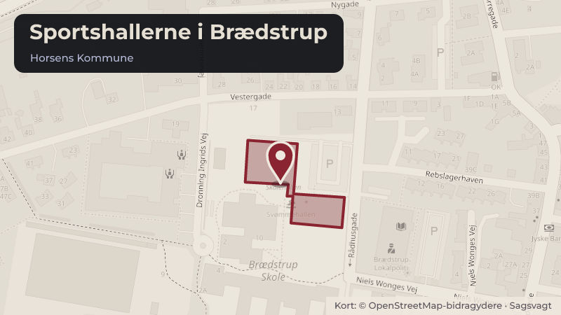

Besluttet 7. september, Kultur- og Fritidsudvalget, Horsens
KF Beretning selvejende hal - Sportshallerne i Brædstrup

Kort fortalt
- Hvem
- Kultur- og Fritidsudvalget, Horsens Kommune
- Hvornår
- Mandag 7. september 2026
- Status
- Besluttet. Kultur- og Fritidsudvalget tog orienteringen til efterretning.Beslutningen er forkortet her. Læs hele beslutningen
Er noget forkert her? Skriv til os
Læs hele sagen Kommunens egen tekst
Indstilling
Direktionen indstiller, at
1. Kultur- og Fritidsudvalget tager orienteringen til efterretning.
Sagsfremstilling
På baggrund af de selvejende hallers vigtige rolle ude i lokalområderne, sammenholdt med det
væsentlige økonomiske tilskud som Horsens Kommune hvert år giver til de selvejende haller,
besluttede Kultur- og Fritidsudvalget på mødet den 11. august 2025, at de selvejende haller
hver andet år skal præsentere en afrapportering til Kultur- og Fritidsudvalget.
Afrapporteringen skal indeholde følgende elementer:
Kort præsentation af hallen og dens funktioner.
Gennemgang af økonomien.
Gennemgang af årets aktiviteter:
Herunder en beskrivelse af brugen af hallens faciliteter, belægningsgrad herunder
mulighederne for online booking af hallen, fordelingen mellem de forskellige
aktiviteter mm.
Herunder en beskrivelse af skolernes og institutionernes reelle brug af hallen og
øvrige lokaler.
I 2026 er det Sportshallerne i Brædstrup og Hovedgård Hallen der deltager.
Sportshallerne i Brædstrups beretning er vedhæftet som bilag.
Halinspektør Jørgen Korshøj, Trine Nicolaisen og bestyrelsesformand Jørgen Bjerg deltager
under dette punkt.
/MFKJ
Beslutning
Kultur- og Fritidsudvalget tog orienteringen til efterretning.
Paw Amdisen deltog ikke i sagens behandling.
Kilde: Horsens Kommune, Kultur- og Fritidsudvalget, referat fra mødet mandag 7. september 2026, punkt 1. Læs den originale sag hos kommunen.
Bydele i sagen: Brædstrup · Hovedgård
Steder i sagen: Sportshallerne i Brædstrup